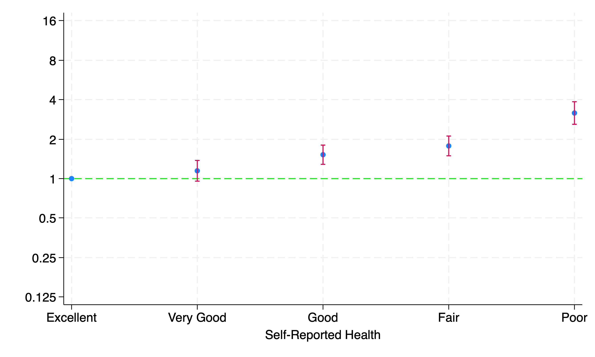

7. Survival analysis: non-parametric, semi-parametric, parametric#
7.1 Parameters#
Non-parametric#
Click to view the Stata code
```stata cls //1. data global repo "https://github.com/jhustata/project/raw/main/" global nhanes "https://wwwn.cdc.gov/Nchs/Nhanes/"//2. code do \({repo}followup.do save followup, replace import sasxport5 "\){nhanes}1999-2000/DEMO.XPT”, clear merge 1:1 seqn using followup, nogen save survey_followup, replace
//3. parameters import sasxport5 “\({nhanes}1999-2000/HUQ.XPT", clear tab huq010 merge 1:1 seqn using survey_followup, nogen keep(matched) rm followup.dta rm survey_followup.dta g years=permth_int/12 stset years, fail(mortstat) replace huq010=. if huq010==9 label define huq 1 "Excellent" 2 "Very Good" 3 "Good" 4 "Fair" 5 "Poor" label values huq010 huq levelsof huq010, local(numlevels) local i=1 foreach l of numlist `numlevels' { local vallab: value label huq010 local catlab: lab `vallab' `l' global legend`i' = "`catlab'" local i= `i' + 1 } sts graph, /// by(huq010) /// fail /// per(100) /// ylab(0(20)80 , /// format(%2.0f) /// ) /// xlab(0(5)20) /// tmax(20) /// ti("Self-Reported Health and Mortality") /// legend( /// order(5 4 3 2 1) /// lab(1 "\)legend1”) /// lab(2 “\(legend2") /// lab(3 "\)legend3”) /// lab(4 “\(legend4") /// lab(5 "\)legend5”) /// ring(0) pos(11) /// ) graph export nonpara.png, replace
</Details>

#### Semi-parametric
<Details>
<Summary>Click to view the Stata code</Summary>
```stata
/* -- earlier code --*/
stcox i.huq010, basesurv(s0)
matrix define mat = r(table)
matrix list mat
matrix mat = mat'
svmat mat
preserve
keep mat*
drop if missing(mat1)
rename (mat1 mat2 mat3 mat4 mat5 mat6 mat7 mat8 mat9)(b se z p ll ul df crit eform)
g x=_n
replace b=log(b)
replace ll=log(ll)
replace ul=log(ul)
twoway (scatter b x) || ///
(rcap ll ul x, ///
yline(0, lcol(lime)) ///
ylab( ///
-2.08 "0.125" ///
-1.39 "0.25" ///
-.69 "0.5" ///
0 "1" ///
.69 "2" ///
1.39 "4" ///
2.08 "8" ///
2.78 "16") ///
legend(off) ///
xlab( ///
1 "$legend1" ///
2 "$legend2" ///
3 "$legend3" ///
4 "$legend4" ///
5 "$legend5") ///
xti("Self-Reported Health") ///
)
graph export semipara_unadj.png, replace
restore
7.2 Inferences#
Click to view the Stata code
hist ridageyr
export agedistribution.png, replace
replace ridageyr=ridageyr/10
stcox i.huq010 ridageyr riagendr, basesurv(s0)
return list
matrix define mat_adj=r(table)
matrix define mat_adj=mat_adj'
matrix list mat_adj
svmat mat_adj
keep mat_adj*
drop if missing(mat_adj1)
rename (mat_adj1 mat_adj2 mat_adj3 mat_adj4 mat_adj5 mat_adj6 mat_adj7 mat_adj8 mat_adj9)(b se z p ll ul df crit eform)
g x=_n
replace b=log(b)
replace ll=log(ll)
replace ul=log(ul)
twoway (scatter b x) || ///
(rcap ll ul x, ///
yline(0, lcol(lime)) ///
ylab( ///
-2.08 "0.125" ///
-1.39 "0.25" ///
-.69 "0.5" ///
0 "1" ///
.69 "2" ///
1.39 "4" ///
2.08 "8" ///
2.78 "16") ///
legend(off) ///
xlab( ///
1 "$legend1" ///
2 "$legend2" ///
3 "$legend3" ///
4 "$legend4" ///
5 "$legend5" ///
6 "Age/10" ///
7 "Female") ///
xti("Self-Reported Health") ///
)
graph export semipara_adj.png, replace

7.3 Updates#
Comment on the coefficients of the parameters in the unadjusted analysis
What is the impact on your inferences of accounting for age, sex and race?
Are you content with your inferences after adjusting for demographics?
Might there be other potential confounders from questionnaire, exam, and labs?
How might you prepare the updated analysis to take additional variables into consideration?
You might already know that you lose degrees of freedom as you add parameters to your model
So how about increasing your “freedoms” by having a larger population size? Could you write a script that allows any “visitor” to your website or repo to test this hypothesis on a larger study population, taking into account additional survey years?
This latter issue is the definitive update for week 8 of the class
//these variable names don't exist in the dataset, this is a mere demo
di "What do you wish to adjust for in this analysis?" _request($varlist)
capture program drop selfassess
program define selfassess
syntax varlist
stcox i.huq010 `varlist'
end
selfassess $varlist
In the above example, you might ask your collaborators to list what they believe might be confounders in the assocation between self-assessed health status and mortality
7.4 Transparency#
The “most open” you can ever get in the “Open Science” enterprise is by using a public GitHub repo
Of the topics we’ve discussed, including data, code, parameters, inferences, and updates, “data” is of particular concern if there might be “disclosure risks”
In the Stata II (Intermediate) we’ll assume all data are de-identified and have zero disclosure risk. Perhaps because we’ve de-identified the data or because we are using simulated datasets
But in Stata III (Advanced) we’ll learn how to use private repos for data storage. We’ll consider how to grant limited access by means of temporary “tokens”
Regardless, the parameters of our models represent reduced dimensions of data and have no associated disclosure risks
So we should consider “extracting” parameters from our data and from that point forth being 100% transparent in our workflow
7.5 Extracting Parameters#
Virtually all scientific inferences from quantitive analyses can be made as long as you have the beta coefficients and the variance-covariance matrix following a multivariable regression.
Because these parameters have zero discolure risk, you are encouraged to have them made available to the public in your public GitHub repo
You’d do the public an extra favor if you laid out a generalizable program that allows anyone to add new parameters (i.e., variables and interactions amongst them) to the model with little extra effort
e(b)#
e(V)#
7.6 Lab#
Data Preparation and Initial Analysis#
Objective: Prepare the data from last weeks lab 6, analyse it using nonparametric (Kaplan-Meier), semiparametric (Cox Regression), and parametric (Weibull regression). Generate figures to showcase absolute risks (i.e., cumulative incidence) and relative risks (i.e., hazard ratios). You may adjust for age, sex, and race. But consider expanding the list of confounders so that you achieve unbiased inferences
Provide documentation on your homepage and include necessary links to ease the work of visitor who is trying to navigate your website
7.7 Homework#
Generate .html files of your Stata output using the dyndoc command and provide links to this Stata output on your website to showoff the richness of your output.
Of course you can document your Stata code without the use of dyndoc, by simply building other .md files with annotation and notes intersperced with Stata code – just as this classbook has it.
But for this Stata Programming II (Intermediate) class, you must produce a seperate website with output straight out of Stata. Please create a link to this dyndoc output on your homepage.